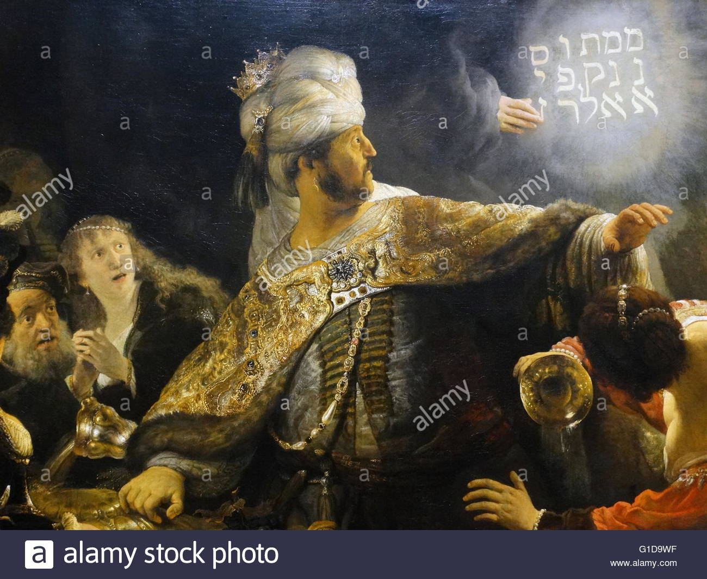
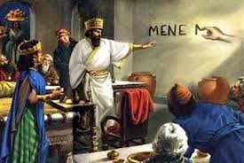

Daniel Chapter Five
Back to contents
Mene, Mene, Tekel, Upharsin
"VERSE 1. Belshazzar the king made a great feast to a thousand of his lords, and drank wine before the thousand."
The feast is supposed to have been an annual festival of one of their deities. Cyrus, who was then besieging Babylon, learnt of its approach and laid plans to capture the city on this day. The scriptures say that Belshazzar drank before the thousand lords invited by him. Other translations say that he drank against the thousand lords. Both show us that he was an enormous drinker.
"VERSE 2. Belshazzar, whiles he tasted the wine, commanded to bring the golden and silver vessels which his father Nebuchadnezzar had taken out of the temple which was in Jerusalem; that the king, and his princes, his wives, and his concubines, might drink therein. 3. Then they brought the golden vessels that were taken out of the temple of the house of God which was in Jerusalem; and the king, and his princes, his wives, and his concubines, drank in them. 4. They drank wine, and praised the gods of gold, and of silver, of brass, of iron, of wood, and of stone."
This festival may have some reference to the former victories over the Jews. They drank from the sacred vessels which were taken from the temple of the Jews while praising their gods made of all materials. Belshazzar had crossed the red line. Probably no other king had carried his impiety to such a height as this, drinking wine from vessels dedicated to God.
"VERSE 5. In the same hour came forth fingers of a man's hand, and wrote over against the candlestick upon the plaster of the wall of the king's palace; and the king saw the part of the hand that wrote. 6. Then the king's countenance was changed, and his thoughts troubled him, so that the joints of his loins were loosed, and his knees smote smote one against the another. 7. The king cried aloud to bring in the astrologers, the Chaldeans, and the soothsayers. And the king spake, and said to the wise men of Babylon, Whosoever shall read this writing, and show me the interpretation thereof, shall be clothed with scarlet, and have a chain of gold about his neck, and shall be the third ruler in the kingdom. 8. Then came in all the king's wise men: but they could not read the writing, nor make known to the king the interpretation thereof. 9. Then was the king Belshazzar greatly troubled, and his countenance was changed in him, and his lords were astonied."
The scene suddenly changes. God interferes, not with flashes of lightning or pearls of thunder, but silently, a hand appears tracing mystic characters upon the wall against the candlestick where all can see. The king cannot read the words but he knows that it is not a message of peace and blessing that is glittering on his palace wall. The king forgot his mocking, revelry, and his dignity and as his trembling was visible from the shaking of his knees, he called for his astrologers and soothsayers to solve the meaning of the mysterious inscription.

"VERSE 10. Now the queen by reason of the words of the king and his lords came into the banquet house: and the queen spake and said, O king, live forever; let not thy thoughts trouble thee, nor let thy countenance be changed. 11. There is a man in thy kingdom, in whom is the spirit of the holy gods; and in the days of thy father light and understanding and wisdom, like the wisdom of the gods, was found in him; whom the king Nebuchadnezzar thy father, the king, I say, thy father, made master of the magicians, astrologers, Chaldeans, and soothsayers; 12. Forasmuch as an excellent spirit, and knowledge, and understanding, interpreting of dreams, and showing of hard sentences, and dissolving of doubts, were found in the same Daniel, whom the king named Belteshazzar: now let Daniel be called, and he will show the interpretation. 13. Then was Daniel brought in before the king. And the king spake and said unto Daniel, Art thou that Daniel, which art of the children of the captivity of Judah, whom the king my father brought out of Jewry? 14. I have even heard of thee, that the spirit of the gods is in thee, and that light and understanding and excellent wisdom is found in thee. 15. And now the wise men, the astrologers, have been brought in before me, that they should read this writing, and make known unto me the interpretation thereof: but they could not show the interpretation of the thing. 16. And I have heard of thee, that thou canst make interpretations, and dissolve doubts: now if thou canst read the writing, and make known to me the interpretation thereof, thou shalt be clothed with scarlet, and have a chain of gold about thy neck, and shalt be the third ruler in the kingdom."
The queen who told the king about Daniel is supposed to be the queen’s mother who lived during the time of Nebuchadnezzar and the wonderful act that Daniel had acted in her father’s reign was still vivid in her brain. Nebuchadnezzar is called the king’s father but in reality, he was his grandfather.
"VERSE 17. Then Daniel answered and said before the king, Let thy gifts be to thyself, and give thy rewards to another; yet I will read the writing unto the king, and make known to him the interpretation. 18. O thou king, the most high God gave Nebuchadnezzar thy father a kingdom, and majesty, and glory, and honor; 19. And for the majesty that he gave him, all peoples, nations, and languages, trembled and feared before him: whom he would he slew; and whom he would he kept alive; and whom he would he set up; and whom he would he put down. 20. But when his heart was lifted up, and his mind hardened in pride, he was deposed from his kingly throne, and they took his glory from him: 21. And he was driven from the sons of men; and his heart was made like the beasts, and his dwelling was with the wild asses: they fed him with grass like oxen, and his body was wet with the dew of heaven; till he knew that the most high God ruled in the kingdom of men, and that he appointeth over it whomsoever he will. 22. And thou his son, O Belshazzar, hast not humbled thine heart, though thou knewest all this; 23. But hast lifted up thyself against the Lord of heaven; and they have brought the vessels of his house before thee, and thou, and thy lords, thy wives, and thy concubines, have drunk wine in them; and thou hast praised the gods of silver, and gold, of brass, iron, wood, and stone, which see not, nor hear, nor know: and the God in whose hand thy breath is, and whose are all thy ways, hast thou not glorified: 24. Then was the part of the hand sent from him; and this writing was written."
Daniel first makes known that, unlike the soothsayers, he does not enter the work of interpreting this matter on the account of the offer of gifts and rewards. He then tells him that though the king knew about what God had done during the reign of his grandfather, he didn’t humble himself but he went further as to drink wine from the vessels dedicated to God and even insultingly challenged the God of heaven who then sent forth the hand to trace those characters on the wall. He then proceeds to explain the writing.
"VERSE 25. And this is the writing that was written, MENE, MENE, TEKEL, UPHARSIN. 26. This is the interpretation of the thing: MENE; God hath numbered thy kingdom, and finished it. 27. TEKEL; Thou art weighed in the balances, and art found wanting. 28. PERES; Thy kingdom is divided, and given to the Medes and Persians. 29. Then commanded Belshazzar, and they clothed Daniel with scarlet, and put a chain of gold about his neck, and made a proclamation concerning him, that he should be the third ruler in the kingdom."

The kingdom which is at the height of its prosperity is finished. The kingdom is divided for the foes who are already waiting at thy gates.
"VERSE 30. In that night was Belshazzar the king of the Chaldeans slain. 31. And Darius the Median took the kingdom, being about threescore and two years old."
While Belshazzar was indulging in wine, while the angel’s hand was tracing the doom of the city on the wall, while Daniel was interpreting the writing, the Persian soldiers, through the emptied channel of River Euphrates had already made their way into the heart of the city and they were heading for the palace of the king. Scarcely can it be said that they surprised him because he had already being forewarned of his impending doom. But they found him and slew him; and with him the empire of Babylon ceased to be.